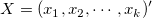
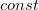
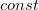
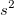
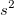
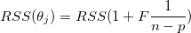
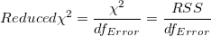
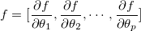
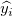
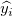

'") は、パラメータです。
は、パラメータです。非線形曲線フィットの目的はデータを最もよく説明するパラメータ値を推定することです。通常、次のように非線形曲線フィットのプロセスを記述することが出来ます。
最小距離を定義するための異なる反復手順および、統計を有するアルゴリズムを選択肢として用意しています。
一般的な非線形モデルは次のように説明されます。
| (1) |
ここで  は、独立変数で、 は、パラメータです。
|
陽関数の例 |
最小二乗法は、測定データから理論曲線の偏差を最小にするパラメータを選択することです。この方法はカイ二乗最小化とも呼ばれ、次のように定義されます。
![\chi ^2=\sum_{i=1}^n \left [ \frac{Y_i-f(x_i^{\prime },\hat{\beta }) } {\sigma _i} \right ]^2](../images/Theory_of_Nonlinear_Curve_Fitting/math-06e0bc4dd4c9e79eae6f116e751e9eb5.png "\chi ^2=\sum_{i=1}^n \left [ \frac{Y_i-f(x_i^{\prime },\hat{\beta }) } {\sigma _i} \right ]^2") |
(2) |
ここで  は、i 番目 (i = 1, 2, …, n) の測定データの行のベクトルデータです。
は、i 番目 (i = 1, 2, …, n) の測定データの行のベクトルデータです。
|
下図は、単純な線形モデルでの最小二乗フィッティングの考え方を示しています。(多重回帰と非線形回帰も同様です。) 最適なフィット曲線は、仮定の理論モデルを表しています。元のデータセットの特定のポイント 回帰モデルに2つの独立変数がある場合、最小二乗推定法は、最適なフィット曲面への測定データのずれを最小化します。3つより多い独立変数を持つ場合、フィットモデルは超曲面になります。この場合、回帰が実行されたときにフィット曲面（または曲線）が作図されません。 |
反復計算の中でパラメータを調整するためのオプションは２つあります。
「Levenberg-Marquardt(L-M)アルゴリズム」11 は、Gauss-Newton法と最急降下法を組み合わせた反復方法です。このアルゴリズムは、ほとんどの場合よく機能し、非線形最小二乗ルーチンの標準になります。
 から
から") を計算
を計算 = 0.001などのの適度な値を選択
= 0.001などのの適度な値を選択 のLevenberg-Marquardt 関数 11を解き、を評価
のLevenberg-Marquardt 関数 11を解き、を評価 \geq \chi ^2(b)") の場合、を10倍に増やし、手順3に戻るを10倍に増やし、パラメーター値をに更新して、手順3に戻る
の場合、を10倍に増やし、手順3に戻るを10倍に増やし、パラメーター値をに更新して、手順3に戻るL-M法に加えて、Originは「滑降シンプレックス法による近似」9,10も提供しています。ジオメトリでは、シンプレックスはN次元のN + 1頂点の多面体です。非線形最適化では、N変数の目的関数のアナログが存在します。反復の間、シンプレックスアルゴリズム（Nelder-Meadとしても知られる）は、局所最小値に収束するまで、パラメータ「シンプレックス」を調整します。
シンプレックス法は、L-M法と異なり、微分を必要とせず、計算負荷が小さい場合に有効です。通常、パラメータの初期化に適切な値が得られなかった場合は、この方法を試し、L-Mを使用したフィット計算のための近似パラメータ値を取得できます。 シンプレックス法は、パラメータ空間の無意味な部分に入りこむ可能性が低いので、より安定している傾向があります。 他方では、一般にL-Mよりもはるかに遅く、特に極小に非常に近いです。現実として、非線形近似のための「完全な」アルゴリズムはなく、多くのことが結果（例えば、初期値）に影響を及ぼす可能性があります。複雑なモデルでは、ある方法が他の方法よりも優れているかもしれません。さらに、フィッティング操作を実行するために両方の方法を試してみるとよいでしょう。
直交距離回帰（ODR、Orthogonal Distance Regression）アルゴリズムは反復プロセス内で残差平方和をフィットパラメータと独立変数を調整することで最小にします。ODRの残差は、従属変数の観測値と予測値の差ではなく、データから近似曲線までの直交距離です。
Originでは、ODRPACK958でODRアルゴリズムを使用します。
陽関数では、ODRアルゴリズムは次のように表現されます。
 \right )")
制約の主要因は次のとおりです。
-\epsilon _{i}\ \ \ \ \ \ i=1,...,n")
ここで、 と
と はユーザが入力した
はユーザが入力した と
と  の重み付け、
の重み付け、 と
と は対応する と の残差、
は対応する と の残差、 はフィットパラメータを示します。
はフィットパラメータを示します。
ODRアルゴリズムについての詳細は、 ODRPACK958を参照してください。
ODRアルゴリズムとL-Mアルゴリズムのどちらをフィットで使用するか選択する際には、次の表の情報を参考にしてください。
| 直交距離回帰 | Levenberg Marquardt法 | |
|---|---|---|
| 適用先 | 陰関数、陽関数の両方 | 陽関数のみ |
| 重み付け | xとyの重み付け、両方に対応 | yの重み付けのみ |
| 残差のソース | データから曲線距離までの直交距離 | 観測値と予測値の差 |
| 反復プロセス | フィットパラメータと独立変数の値を修正 | フィットパラメータの値を修正 |
一般的な陰関数は、以下のように説明されます。
-const=0") |
(5) |
ここで、 と '") は変数、 はフィットパラメータ、 は定数を示します。
は変数、 はフィットパラメータ、 は定数を示します。
|
陰関数の例：
|
ODR法は陰関数と陽関数、どちらでも使用できます。ODR法の詳細については、上のセクションの説明を参照してください。
陰関数では、ODRアルゴリズムは次のように表現されます。
 \right )")
次に従います。
= 0\ \ \ \ \ \ i=1,...,n")
ここで、 と はユーザが入力した と の重み付け、 と は対応する と の残差、 はフィットパラメータを示します。
と は対応する と の残差、 はフィットパラメータを示します。
測定誤差が未知な場合、 は、全i で1に設定され、曲線フィットは、重みなしで実行されます。しかし、測定誤差は既知の場合、これを重みとして扱い、重み付きフィットを実行できます。この場合、カイ二乗は以下のように記述できます。
は、全i で1に設定され、曲線フィットは、重みなしで実行されます。しかし、測定誤差は既知の場合、これを重みとして扱い、重み付きフィットを実行できます。この場合、カイ二乗は以下のように記述できます。
|
|
(6) |
Originでは、数種類の重み付け方法を利用できます。詳細は、Originヘルプの誤差と重み付けを使ってフィットするを参照してください。
フィットに関連する式をここに要約します。
非線形回帰のフィット値の計算は反復法によるものです。上のセクションのイントロダクション（Originの曲線フィットの方法）を読むか、以下の参考文献で詳細を確認してください。
L-Mによる反復計算で、行列Fの偏微分を計算する必要があり、行列の i 番目の行とj 番目の列の要素は次のように表されます。
|
|
(7) |
ここで、機械的重みを使用している場合、 はi 番目のyの誤差です。重みなしの場合、
はi 番目のyの誤差です。重みなしの場合、 です。そして、各反復計算で、各観測値
です。そして、各反復計算で、各観測値 について
について  が評価されます。
が評価されます。
パラメータ の分散共分散行列を以下のようにして取得します。
の分散共分散行列を以下のようにして取得します。
|
(8) |
ここで、 は、F 行列の転置で、s2 は平均残差分散（自由度当たりのカイ二乗とも呼ばれる）で、モデルの偏差は以下のように計算されます。
は、F 行列の転置で、s2 は平均残差分散（自由度当たりのカイ二乗とも呼ばれる）で、モデルの偏差は以下のように計算されます。
|
|
(9) |
ここで、n はポイント数で、p はパラメータの数です。
この行列C の主要な対角値の平方根は、対応するパラメータの標準誤差で、次のようになります。
|
|
(10) |
ここで Ciiは、行列C の i 番目の行と i 番目の列の要素です。Cij は、θi と θjの間の共分散です。
共分散行列の計算の際に、s2を除外するか選択できます。これは、標準誤差の値に影響します。s2を除外する場合、フィット制御の詳細ページにある縮小したカイ二乗値を使うのチェックを外します。共分散は次式で計算されます。
|
|
(11) |
標準誤差は、
|
|
(12) |
パラメータの標準誤差により、フィット値の精度がわかります。通常、標準誤差値の大きさは、フィット値よりも低くする必要があります。標準誤差の値がフィットパラメータより非常に大きい場合、フィッティングモデルは過剰パラメータである可能性があります。
Originは、近似式であるError Propagation式に従って、導出されたパラメータの標準誤差を推定します。
") を
を 変数
変数 の組み合わせ（線形または非線形）を持つ関数とします。
の組み合わせ（線形または非線形）を持つ関数とします。
誤差伝播の一般的な法則は次のとおりです。

ここで、 は、
は、") および
および, \left (j = 1, 2, ..., p \right )") の共分散値です。
の共分散値です。
共分散行列  を計算するときに、派生パラメータの標準誤差値に影響を与える平均残差分散  を除外するかどうか選択できます。を除外する場合、フィット制御の詳細ページにある縮小したカイ二乗値を使うのチェックを外します。
を計算するときに、派生パラメータの標準誤差値に影響を与える平均残差分散  を除外するかどうか選択できます。を除外する場合、フィット制御の詳細ページにある縮小したカイ二乗値を使うのチェックを外します。
例えば、3つの変数を使用する場合、
")
以下を入手します。
![\sigma_z^2 = \left (\frac {\partial z}{\partial \theta_1} \right )^2 \sigma_{\theta_1}^2 + \left (\frac {\partial z}{\partial \theta_2} \right )^2 \sigma_{\theta_2}^2 + \left (\frac {\partial z}{\partial \theta_3} \right )^2 \sigma_{\theta_3}^2 + 2 \left (\frac {\partial z}{\partial \theta_1} \frac {\partial z}{\partial \theta_2} \right ) COV_{\theta_1 \theta_2} + 2 \left (\frac {\partial z}{\partial \theta_1} \frac {\partial z}{\partial \theta_3} \right ) COV_{\theta_1 \theta_3} + 2 \left (\frac {\partial z}{\partial \theta_2} \frac {\partial z}{\partial \theta_3} \right ) COV_{\theta_2 \theta_3}](../images/Theory_of_Nonlinear_Curve_Fitting/math-37a2eeec5b384e170c8c1a0ddda74e60.png "\sigma_z^2 = \left (\frac {\partial z}{\partial \theta_1} \right )^2 \sigma_{\theta_1}^2 + \left (\frac {\partial z}{\partial \theta_2} \right )^2 \sigma_{\theta_2}^2 + \left (\frac {\partial z}{\partial \theta_3} \right )^2 \sigma_{\theta_3}^2 + 2 \left (\frac {\partial z}{\partial \theta_1} \frac {\partial z}{\partial \theta_2} \right ) COV_{\theta_1 \theta_2} + 2 \left (\frac {\partial z}{\partial \theta_1} \frac {\partial z}{\partial \theta_3} \right ) COV_{\theta_1 \theta_3} + 2 \left (\frac {\partial z}{\partial \theta_2} \frac {\partial z}{\partial \theta_3} \right ) COV_{\theta_2 \theta_3}")
ここで、派生パラメータを 、フィットパラメータを
、フィットパラメータを とします。派生パラメータの標準誤差は
とします。派生パラメータの標準誤差は です。
です。
パラメータの信頼区間を計算するために、Originでは、漸近対称法とモデル比較法の2つの手法を提供しています。
回帰分析の前提のひとつとして、データが正規分布しているため、標準誤差値を使用してパラメータの信頼区間を構築できます。与えられた信頼水準 α に対して、パラメータの (1-α)x100% の信頼区間は次のようになります。
|
|
(13) |
パラメータの信頼区間は、区間に真の値が含まれる可能性を示します。
上記の信頼区間は漸近的です。これは、信頼区間を計算するために最も頻繁に使用される方法です。ここでの「漸近的」とは、近似値であることを意味します。
より正確な値が必要な場合、信頼区間を推定するモデル比較ベースの手法を使うことができます。
モデル比較法を使う場合、上側/下側の信頼限界は、RSS(θj) (残りのパラメータで最小化される) を(1+F/(n-p)) の因数によるRSSより大きする、各パラメータp の値を探して計算されます。
|
 |
(14) |
ここで、F = Ftable(α,1,n-p)であり、RSS はフィットセッションで見つかった最小の残差二乗和です。
各パラメータにt 検定を実行することができ、その値が0かどうかを調べることができます。j 番目のパラメータに対するt検定の帰無仮説は
 |
そして、対立仮説は、次のようになります。
 |
t値は、次の式で計算できます。
|
|
(15) |
上記のt 検定の H0 が真である確率
|
|
(16) |
ここで、tcdf(t, df) は、自由度 df を持つスチューデントt 分布の下側の確率を計算します。
方程式が過剰パラメータ化されている場合、パラメータ間に相互依存関係があります。i 番目のパラメータの依存度は次のように定義されます。
|
(17) |
そして、 (C-1)ii は、行列Cの逆行列の(i, i )番目の対角要素です。この値が1に近い場合、強い依存度があります。
フィットモデルの品質を評価する方法の詳細については、依存度を使ったモデル診断を参照してください。
信頼区間の半値幅は以下の通りです。
|
|
(18) |
ここでUCLとLCLは、それぞれ上側信頼区間と下側信頼区間です。
いくつかのフィット統計式を以下に要約します。
誤差の自由度詳細は ANOVA表を参照してください。
残差平方和。
|
(19) |
自由度あたりカイ二乗値は、自由度で除算された残差平方和と等しくなります。
|
 |
(20) |
R2 値は、フィットがどの程度の良さであるかを表す量で次式で計算することができます。
|
|
(21) |
ここで、 TSS は合計平方和、RSSは残差平方和です。
調整されたR2値です。
|
|
(22) |
R 値はR2の平方根に等しくなります。
|
(23) |
R2、補正R2およびRの詳細については、フィット結果の良さを参照してください。
誤差の二乗平均平方根または残差の標準偏差は、既約χ2の平方根に等しくなります。
|
(24) |
ANOVA表：
Note:ANOVA表は陰関数フィットでは使用できません。
| df | 平方和 | 平均平方 | F値 | Prob > F | |
|---|---|---|---|---|---|
| モデル |
p |
SSreg = TSS - RSS |
MSreg = SSreg / p |
MSreg / MSE |
p-値 |
| 誤差 |
n - p |
RSS |
MSE = RSS / (n - p) |
||
| 未修正合計 |
n |
TSS |
|||
| 修正合計 |
n-1 |
TSS補正 |
Note:非線形フィッティングで、Originは補正と未補正の合計平方和を出力します。補正モデル：
|
|
(25) |
未補正モデル:
|
|
(26) |
F値で、フィットモデルがモデル「y=一定」と、有意に異なるかどうかを検定します。また、p値、または、有意水準は、F検定と一緒に出力されます。p値が、フィットモデルがモデル「y=一定」と有意に異なっていることを意味する よりも小さい場合、帰無仮説を棄却できます。
よりも小さい場合、帰無仮説を棄却できます。
フィット関数の信頼区間は、フィット関数の値の推定値が独立変数の特定の値でどれほど良いかを示します。フィット関数の正確な値が信頼区間に含まれるように、100α%で指定することができます。ここで、α は指定した信頼水準です。フィット関数に対して、この定義済みの信頼区間は、以下の式で計算できます。
|
(27) |
ここで、
|
 |
(28) |
指定した有意水準αに対する推定帯は、特定の独立変数の値で、一連の繰り返し実験によるすべての測定データの100α%がその範囲に含まれるような区間です。フィット関数に対して、この定義済みの推定区間は、以下の式で計算できます。
|
(29) |
ここで
 は規約
は規約 です。
です。
| Note:フィット曲線プロットの信頼帯と推定帯は陰関数では利用できません。 |


\,\!") に対して
に対して  における理論値は、 で表されます。
における理論値は、 で表されます。^2 + \left(\frac{y-y_c}{b}\right)^2 - 1")
![\chi ^2=\sum_{i=1}^nw_i[Y_i-f(x_i^{\prime },\hat \beta )]^2](../images/Theory_of_Nonlinear_Curve_Fitting/math-d8212e6e4627f94f8d8ca2a1ede630e2.png "\chi ^2=\sum_{i=1}^nw_i[Y_i-f(x_i^{\prime },\hat \beta )]^2")
}{\sigma _i\partial \theta _j}")


^{-1}\,\!")

}s_{\theta _j}\leq \hat \theta _j\leq \hat \theta _j+t_{(\frac \alpha 2,n-p)}s_{\theta _j}")

)\,\!")


/\sum_{i=1}w_{i} \right )^2\sum_{i=1}w_{i}")